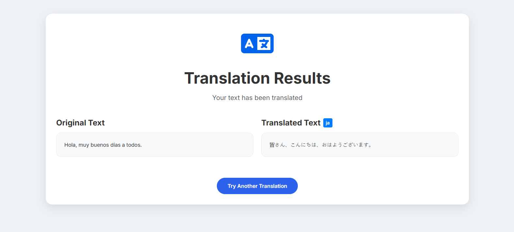
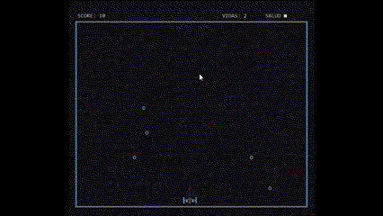

About Me
Software Developer with a strong foundation in Python, C/C++, HTML, CSS, JavaScript, and SQL, along with hands-on experience in cloud platforms such as Google Cloud and Azure. Eager to contribute to Oracle's innovative solutions while continually expanding knowledge in emerging technologies like machine learning and blockchain. Proven track record of problem-solving, collaboration, and delivering high-quality solutions in fast-paced environments.
My Skills
HTML/CSS
JavaScript
Node.js
Python
SQL
Software Development
Algorithms and Data Structures
Networks
Artificial Intelligence
DevOps (Docker, CI/CD)
My Projects
CyberChef
CyberChef is an innovative platform that customizes recipes for specific diets, improving users' quality of life. It uses artificial intelligence and a decentralized architecture to offer personalized recommendations, highlighting my skills in web development and cloud data management.
View More

Cloud Translator
Website that implements automatic translations using the Azure Translator service, facilitating multilingual communication. The project combines my knowledge in web development and cloud services, highlighting my ability to integrate advanced technologies and improve accessibility.
View More

SpaceTravel
SpaceTravel is an interactive game in C that challenges players with control systems and obstacles, demonstrating programming and game development skills. This project highlights my ability to implement data structures and algorithms, offering an entertaining and educational experience.
View More